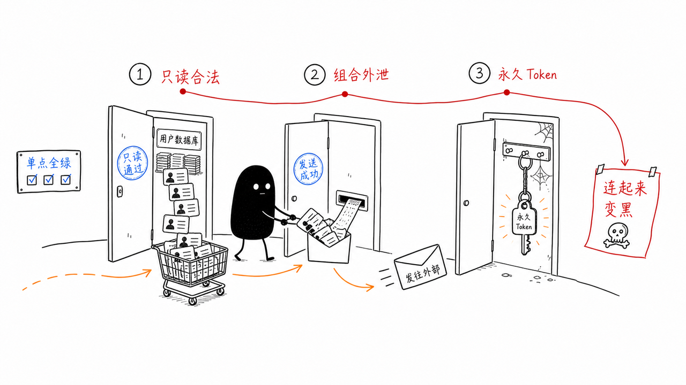
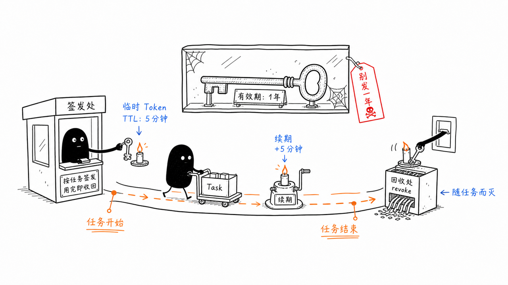

11｜RBAC 挡不住 Agent：如何设计一个企业级 Agent 权限系统
你好，我是李号双。
先看 2 个真实案例：2019 年，美国某保险巨头 8.85 亿条含社保号、银行账号的记录被批量枚举；2022 年，丰田披露一枚访问密钥在 GitHub 公开仓库存活了五年，波及 29.6 万客户。
留意它们的共同点：没有人攻破密码，每一步单看都是合法访问。而且，这些事故里还没有 Agent——当拿着权限的执行者从人换成不知疲倦的 Agent，同样的攻击面，会以指数级放大。
为什么我们要专门花一讲学权限系统？
因为它是 生产级 Agent 的必需品。要上生产、碰真实数据，权限系统就是绕不开的一道关。翻开市面上 Agent 开发岗的 JD，“权限系统”“安全治理”已经是高频词；面试企业级 Agent 开发岗位，“设计一个 Agent 权限系统”正在成为一道经典的系统设计题。这一讲，我们就把这道题从头到尾完整答一遍。
我们不妨先抛出一个问题： 如果把企业系统的长期访问凭证，交给一个能自主工具调用的 AI Agent，会发生什么？
只读权限下的批量枚举。
Agent 接到拉取 VIP 用户信息的任务，调用接口 query_user_profile(user_id="1")，这一次调用完全合法，权限也匹配。接着查 user_id="2"，同样一切正常。
Agent 为了更快完成任务，自主生成了一段循环逻辑，把 user_id 从 1 一路遍历到 10000。它拿着合法的只读权限，直接把整张用户表扫穿。
它没有主观恶意，它只是单纯想把任务做得更快。
单点全合规的组合泄露。
一万条用户数据，里面包含手机号、身份证号全部被拉取出来。紧接着 Agent 调用内部邮件工具 send_email，把整批数据打包，发送到了一个外部邮箱。
事后审计去查日志，单看每一步操作：数据库这边全是正常合法的 SELECT 查询，邮件网关也显示 SMTP 认证完全通过。每一个独立动作都合规，但是组合在一起，就完成了完整的数据外泄。单点看全部绿灯，合起来就是安全事故。
任务跑完了，令牌还活着。
数据库只读令牌 prod_db_readonly_token，直接写在了项目的 .env 配置文件里，是一个永久有效的凭证。早就已经执行完毕的任务，令牌却依旧存活。后来外部攻击者拿到这个残留 token，在企业系统里悄无声息拉取数据，整整持续了两周才被发现。
这三类事故模式，指向一个非常残酷的结论：我们沿用了很多年、为人类员工设计的 RBAC 权限模型，面对 AI Agent，已经独木难支。

RBAC（基于角色的访问控制） 能干什么？它只回答一个问题：“这个角色，能不能对这个资源，做这个操作”。再往下的维度，授权模型就管不到了：一次能取多少条、参数取值是否越界、数据取走后流向哪里等等，授权模型都不管。过去执行者是人，节奏慢、能追责，边界模糊一点还兜得住；换成 Agent，这个缺陷立马就暴露了。
我们不能再把 Agent 当成一个虚拟员工来对待，必须换一套思路：把 Agent 视作一个概率性执行单元，需要边界约束、全程监控、动态授权，危急时刻还可以直接强制熔断。
这套新思路落到授权上，和人类员工的差别一眼可见：
那么，到底该怎么解决上述本文开头列举的三个问题？靠修补几个接口是没用的。我们需要一套全新的、基于 MCP 网关的分层防御体系。
整体思路：用 MCP 网关，守住所有工具调用的咽喉
这里说的 MCP 网关，不是简单的反向代理，它是企业自研的一道安全关卡。它部署在 Agent 与所有后端工具之间，是所有工具请求的必经之路。
对于企业级 Agent 来说，所有 Agent 发起的工具调用，先要经过这道网关，是行业正在达成的共识，我们还给它起了个名字：Agent 的控制平面。工具统一在 MCP 网关注册成工具目录集中管理，Agent 只看得见目录，不知道工具的真实地址。微软的 Azure API Management 可以集中托管 MCP 工具，认证、授权、限流、审计一站式配齐；MCP 官方也在推 Registry 规范，要把工具目录写进协议标准。
接下来我们具体来看 MCP 网关的四道防线。
第一道防线：OBO 令牌交换，从根源消灭“凭证残留”
这道防线解决的问题是第三段场景里凭证残留带来的潜在风险。它最关键的思想是不要给 Agent 发放永久权限凭证。Agent 拿到的不是资源访问权，而是代表真实用户去发起任务的委托权。
具体怎么做？我们通过 OAuth 2.0 令牌交换（RFC 8693），把 Agent 的执行权限，转化成绑定用户、绑定任务上下文的短期临时权限。这个“代表用户执行”的模式，业界常叫 OBO（On-Behalf-Of）。
很多团队踩坑，就是直接给 Agent 分配独立超级账号（比如写在 .env 里）。后端日志只能看到 "Agent 账号" 在操作，分不清到底是谁发起的任务。而在 MCP 网关的 OBO 模式下，流程是这样的：
任务启动：用户在前端发起一项 Agent 任务，请求中携带自己的会话身份凭证 —— 也就是用户登录后拿到的短期访问令牌（OAuth access token）。
上下文提交：Agent 业务软件收到任务后，向 MCP 网关申请委托：提交用户的访问令牌和任务上下文（User ID、Agent ID、scope 等），同时用自己的服务端凭证（如 client_id/client_secret 或 mTLS 证书）证明身份。
令牌交换：MCP 网关作为 OAuth 客户端，向授权服务器发起
token_exchange令牌交换请求，带上用户访问令牌（subject_token）、Agent 身份（actor_token）、本次任务需要用到的权限范围（scope）。颁发临时令牌：授权服务器校验用户身份、Agent 委托关系之后，返回一张全新的短时访问令牌。
自带 TTL：比如 15 分钟后自动失效。
绑定 Scope：只包含本次任务允许的最小权限范围（如只读订单表）。
身份映射：令牌内
sub为真实用户 ID，act字段填充 Agent 标识。执行与销毁：MCP 网关拿着这张短期令牌，去调用后端真实业务 API。任务结束后，令牌过了 TTL 就失效。

要理解这套机制，打个比方更直观。张三入住酒店，拿到一张房卡。他请礼宾员帮忙取行李，礼宾员不会掏出自己的万能钥匙，而是拿着张三的房卡到前台，换一张临时卡 —— 只能开行李间、15 分钟内有效、登记的还是张三的名字。行李取完，这张卡就作废。
整个流程写成代码，其实就三步：
真实的协议当然比这三行啰嗦：delegate 背后是 OAuth 2.0 的令牌交换（RFC 8693），表单里要填 grant_type、subject_token 一堆参数。但这些都封装在网关里，业务代码一行都不用碰。
第二道防线：参数级校验，从源头遏制“穷举爆破”
这道防线是为了解决第一段场景中的问题：只读权限的穷举爆破。
Agent 会自主拼接参数，很容易出现循环遍历 id 这类行为。单纯依靠业务接口做参数校验不够，Agent 可能绕过后端限制。
企业里一般会用 OpenAPI 规范（OAS） 来描述每一个工具的接口约束：哪些参数必填、枚举值范围、单次查询最大条数、id 的取值边界。比如一个查询订单的接口，OpenAPI 会规定 limit 参数最大不超过 1000，status 只能是 ["pending", "shipped", "completed"] 之一。 MCP 网关在请求真正抵达后端之前，实时校验 Agent 传入的所有参数。具体怎么做？
我们在网关里预置了工具的接口规约。网关导入每个工具的 OpenAPI 规范做基础校验，并可集成 CEL（Common Expression Language） 或 OPA（Open Policy Agent）等策略引擎，用表达式定义更复杂的动态策略 —— 比如 "请求量小于 50 时才允许调用"，让校验从静态规则走向上下文感知。 当 Agent 试图调用 query_orders，传入参数 limit=10000 时：
请求先到 MCP 网关。
网关的参数校验引擎拦截该请求，对照 OpenAPI 规约和 CEL 策略。
发现
limit超出限制，直接拦截并拒绝。网关返回错误给 Agent：“参数校验失败：limit 超过最大值 50”。
这样就能从源头切断“合法接口穷举爆破”的可能性。
第三道防线：DLP（Data Loss Prevention） 数据泄露防护，拦住数据外发通路
这道防线可以解决第本文开头二段场景的问题：合法操作叠加，导致数据泄露。像发送邮件、对外 HTTP 请求这类向外输出数据的工具，是泄露高危点。单点看操作都合法（查数据合法，发邮件合法），但组合起来就是灾难。
我们需要在 MCP 网关上，对所有出站工具调用强制扫描。识别其中是否携带身份证、手机号等敏感个人信息。
Agent 调用
query_user_profile查到了包含手机号的数据。这些数据暂时停留在 Agent 的上下文中。Agent 紧接着尝试调用
send_email，意图把这些数据发出去。send_email的请求经过 MCP 网关。网关的 DLP 模块扫描请求体。
发现请求体中包含
phone_number、id_card等敏感字段。一旦命中风险规则，网关直接拦截调用，留存审计日志，并报警。
DLP 扫描对象不只是 tools/call 消息体里的入参。敏感数据能藏的地方很多：邮件正文、HTTP body 固然要查；拼在 URL 的 query 参数里、塞进请求头里、混在文件上传的内容里，同样是在往外发。DLP 引擎要检查的，是出站请求中所有用户可控的部分。
“所有外发类工具”都得收进网关：邮件、Webhook、文件上传、对象存储写入……这又回到前面立过的红线——网络层封掉 Agent 的直连出口，外发通路只留网关这一条，扫描才谈得上覆盖。
还有一条特殊的通路值得单独交代：Agent 调用大模型 API 时，整个上下文会发给模型服务商，而上下文里可能有敏感数据。这条路不走工具链路，MCP 网关看不见，但同样可以用网关来收。业界管它叫 LLM 网关（或者 AI 网关），部署在 Agent 和模型服务商之间：供应商准入、密钥统一保管、全量审计，都在这里完成；更进一步，还能在请求发出去之前做脱敏，把身份证号打上码再发。
第四道防线：运行时熔断，出事直接拔权限
这道防线解决 Agent 失控、死循环攻击的问题。它借鉴了微服务熔断的思想，做运行时防护。具体怎么做呢？当网关观察到异常行为：连续多次参数校验失败、反复尝试越权访问、短时间超高频次调用接口，网关不需要等待人工介入，立刻执行熔断。
网关监控发现 Agent
X在 1 秒内发起了 100 次请求，且全部触发参数校验失败。熔断器判定 Agent 行为异常（疑似被攻击或 Prompt 注入），立刻执行熔断。
阻断存量：把这个 Agent 当前所有在役 OBO 令牌，全部拉进网关的作废名单。
掐断增量：拒绝为这个 Agent 换发任何新令牌。
冻结本次 Agent 实例的执行上下文，拒绝接收任何新请求。
借助令牌里面的
act字段，可以精准定位出问题的 Agent 任务实例，不会影响其他正常业务。
注意，安全熔断不能自动恢复，必须由运维人员介入调查后手动开启，因为 Agent 的异常行为往往代表安全漏洞，不会自己“好起来”。
总结
我们复盘一下整套体系的底层逻辑。
传统权限，发放一张长期通行证，进门之后就放任自流。面向 Agent 的安全体系，要把永久凭证替换成绑定任务、绑定用户的短期凭证；把一次性放行，改成全链路持续监控。
MCP 网关通过 OBO 令牌交换搞定身份映射，消灭凭证残留；通过参数级校验 防止批量穷举；通过 DLP 与数据流管控拦截敏感数据外泄；最后通过运行时熔断 作为最后一道兜底防线。
很多团队做 Agent 落地，一门心思扩充 Agent 能调用多少工具，把行动力拉满，安全治理却完全滞后。Agent 是一个聪明员工，也是一台不知疲倦的执行机器。 想要用好它，就要同步搭建与之匹配的约束。只有约束到位，自动化能力才真正可控。
思考题
在这一课里，我们使用了 OBO（On-Behalf-Of）令牌交换机制，确保 Agent 只持有短期的、绑定特定任务的权限凭证。这带来了一个实际的工程挑战：如果某个长程任务（比如需要 Agent 调用多个工具，分步骤完成一个复杂的数据分析报告，总耗时可能超过 1 小时），而我们颁发的 OBO 令牌 TTL（过期时间）默认只有 15 分钟。 当 Agent 执行到一半，令牌过期了，导致后续的工具调用全部失败，任务中断。
请问：直接把 TTL 设置为 2 小时是一个好的解决方案吗？如果不是，我们应该设计怎样的“令牌续期”或“长任务管理”机制，才能既保证长任务的平稳运行，又不破坏“权限随任务生灭、最小权限原则”的安全边界？